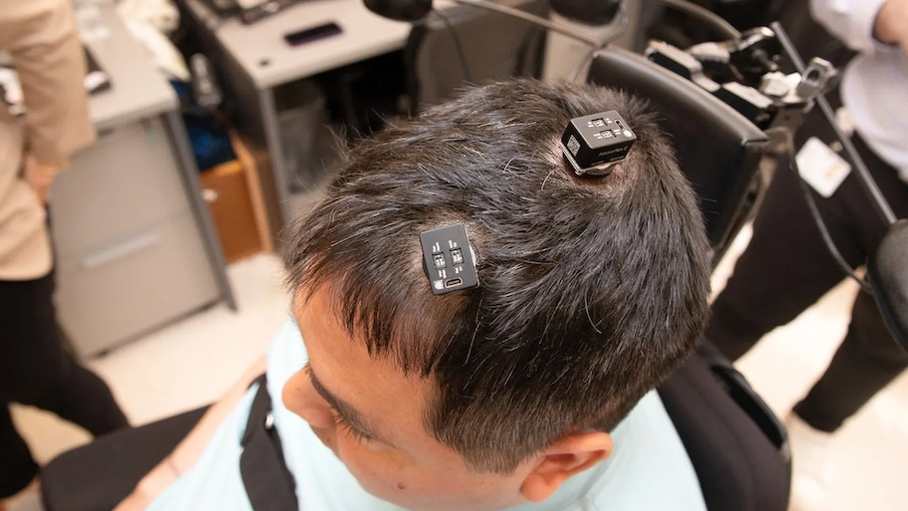

Nvidia anuncia nova configuração de chips para acelerar aplicativos de IA
Nova versão do "Grace Hopper Superchip" aumenta a largura de banda de memória, o que dará ao microprocessador capacidade de executar modelos de IA maiores.
 Leia mais sobre essa notícia
Leia mais sobre essa notícia
Tetraplégico recupera movimentos após implantar chips de inteligência artificial no cérebro
Keith Thomas passou por uma cirurgia de mais de 15 horas e, logo depois, já pôde sentir o toque de sua irmã
 Leia mais sobre essa notícia